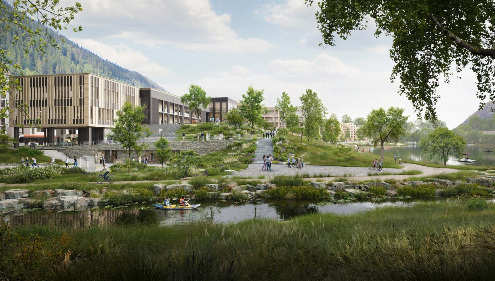

"Felles ansvar for bærekraft:
For at HVLtopia skal lykkes med å skape en bærekraftig by, er det avgjørende at innbyggerne aktivt
bidrar og engasjerer seg. Bærekraftige løsninger kan bare oppnå sitt fulle potensial når samfunnet som
helhet står bak dem. Ved å redusere eget energiforbruk, ta i bruk grønnere transportalternativer og
delta i lokale miljøtiltak, kan hver enkelt innbygger bidra til å redusere byens samlede
karbonfotavtrykk. Små handlinger fra mange mennesker kan til sammen utgjøre en betydelig forskjell for
byens bærekraftsmål.
Skap et bedre lokalsamfunn:
Ved å delta i prosjektet får innbyggerne muligheten til å være med på å forme sitt eget lokalsamfunn.
Deres innspill og handlinger er med på å skape en tryggere, renere og mer inkluderende by. Engasjement i
lokale initiativer som miljødugnader, deling av kunnskap om bærekraftige praksiser og samarbeid med
lokale myndigheter gir innbyggerne en følelse av eierskap over fremtidens byutvikling. Det handler om å
skape et sted der alle trives, og hvor kommende generasjoner kan vokse opp i et sunnere miljø.
Styrk samfunnets motstandsdyktighet:
Aktiv deltakelse fra innbyggerne er avgjørende for å styrke byens evne til å håndtere fremtidige
utfordringer, som klimaendringer og befolkningsvekst. Ved å engasjere seg i prosessen kan innbyggerne
lære mer om hvordan de kan tilpasse seg endringer og bidra til byens robusthet. Deres engasjement kan
også bidra til raskere identifisering og løsning av lokale problemer, for eksempel gjennom bruk av
teknologiske plattformer der folk kan rapportere problemer med luftkvalitet, støy eller infrastruktur.
Fremme bevissthet og kollektiv handling:
Innbyggernes engasjement er nøkkelen til å spre kunnskap og øke bevisstheten om bærekraft. Ved å være
rollemodeller i sitt nærmiljø kan de inspirere andre til å ta bærekraftige valg i hverdagen. Jo flere
som deltar aktivt, jo større er sjansen for å skape en kultur for bærekraftig handling i hele samfunnet.
Dette vil bidra til en varig endring der bærekraftige valg blir normen og ikke unntaket.